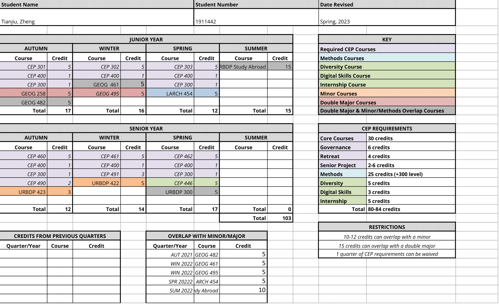

Individiualized Study Plan
"The Individualized Study Plan (ISP) is the most important planning document that you will write in CEP. It is the program's way of ensuring that you are intentional about your education, and that you use the freedom the major offers to chart your own educational path. We want you to chart out your next two years in a way that is consistent with your goals as well as your graduation requirements. In this manner, the ISP is both an academic road map, laying out the courses you plan to take and the activities you plan to engage in, and a written reflection of your educational aspirations and accomplishments. Your plan will evolve during your time in the major. You should think of the ISP as a living document, regularly revising it top reflect the changes you make as you discover new opportunities and interests".
Autumn, 2021
- CEP 300 - CEP Retreat
- Focuses on planning analysis assessment and development of the major. Opportunities for community building and all-major policy deliberation and decisions. Workshops for skill building in consensus, facilitation, and for major-specific activities such as developing individual study plans and study abroad experiences.
- CEP 400 - Governance Practicum
-
Emphasizes personal and collective leadership, democratic decision making, and learning through direct
action and reflection. Explores and develops students' personal skills as doers and leaders, while also
learning how to form and function as effective groups.
- During my first quarter of governance, I chose to join the CAPP committee.
- CEP 301 - The Idea of Community
-
Theories of community and communal rights and responsibilities. Experience building a learning community
within major. Explores struggles for community in every sector of life.
- Within this CEP core course, I seek to gain a better understanding of communities and the complex social relationships that exist within them, as well as defining them.
- GEOG 245 - Geodemographics: Population, Diversity, And Place
-
Explores the geodemographic underpinnings of societal dynamics and the spatial diversity of United
States populations. Topics include immigration policy, the concept of 'race' in the census, fertility
and mortality differences, political redistricting, segregation, and internal migration of populations.
Examines regional and local scales of variation using geodemographic techniques and GIS.
- I am taking this class for my geography major, and to fulfill one of the Geography major credits requirements. This class explores various demographic & population topics that are relevant to our world today. I think this course will give me a better understanding of how this sort of data is compiled and gain a better idea of how to use data such as the US Census.
- GEOG 482 - GIS Data Management
-
Examines the principles and application of geospatial database management software, including personal
and enterprise geodatabase management solutions. Considers enterprise architectures for GIS relative to
organizational size. Addresses collaborative uses of Internet, Intranet, and Extranet architectures.
Offers case studies in database management, with a variety of dataset types and sizes.
- I am taking this course for my geography major. However, I find that the work within this class to be relevant to my focus, as well. The course primarily uses python for the labs, which consists of manipulating & performing spatial analysis on geographic data.
Winter, 2022
- CEP 302 - Environmental Response
-
Explores issues of environmental crisis and societal responses. Readings and reflective analysis from
broad selection of authoritative sources to develop grounded perspective in ecological literacy and
consciousness. Concurrently, experiential education in challenges and practical responses to building
sustainable society through participation in community-based environmental effort.
- Within the second CEP core course, I hope to gain a better understanding of the many environmental issues that we're facing today, as well as gaining better research skills.
- CEP 400 - Governance Practicum
- Emphasizes personal and collective leadership, democratic decision making, and learning through direct action and reflection. Explores and develops students' personal skills as doers and leaders, while also learning how to form and function as effective groups.
- GEOG 461 - Urban Geographic Information Systems
-
Use of geographic information systems to investigate urban/regional issues; focus on transportation,
land-use and environmental issues; all urban change problems considered. GIS data processing strategies.
Problem definition for GIS processing. Data collection, geocoding issues. Data structuring strategies.
- This course will fulfill both a geography major requirement, as well as methods credits for CEP. I am taking this course as it directly relates to my interests, and it should help me gain further technical knowledge of GIS & how I can apply the skill to urban environments.
- GEOG 495 - Special Topics ("Visualizing Seattle")
-
The course will invite students to develop critical, creative, and analytic capacity for understanding
the convergence of geography, art, and visualization. The goal is to encourage students to reflect on
something special in their lives in Seattle, and engage with various methods and mediums to best convey
and 'visualize' their experiences. The course will explore new creative possibilities of visualization
and mapping, including a collage art and coding for a graph, that will help to produce new artistic and
spatial knowledge about Seattle.
- This course will fulfill a geography major requirement, as well as methods credits for CEP. I think the topic is quite interesting, as well as using Seattle as a point of focus for the course.
Spring, 2022
- CEP 300 - CEP Retreat
- Focuses on planning analysis assessment and development of the major. Opportunities for community building and all-major policy deliberation and decisions. Workshops for skill building in consensus, facilitation, and for major-specific activities such as developing individual study plans and study abroad experiences.
- CEP 303 - Social Structures and Processes
- Investigates use of formal and informal social structures and processes within context of community and environment. Looks at patterns and institutions of social organization and relationships among different sectors. Issues of interrelatedness, citizenship, knowledge, and communication.
- CEP 400 - Governance Practicum
- Emphasizes personal and collective leadership, democratic decision making, and learning through direct action and reflection. Explores and develops students' personal skills as doers and leaders, while also learning how to form and function as effective groups.
- L Arch 454 - History of Urban Landscapes and Environments
-
Explores the history and historiography of urban landscapes and the design of cities with an emphasis on
North America in the context of the broader study of cities in China, Japan, and in the Western world
from the pre-classical through twentieth centuries in Europe.
- I am taking this course as both a methods & for the Urban Ecological Design minor. The course delved into aspects of urban design, with a focus on former Soviet cities which I thought was very interesting. I think it's important to look at the design aspects of urban landscapes, which is something that I don't tend to focus on given my urban planning focus.
Summer, 2022
- Study Abroad in the UK & Netherlands
-
I undertook a full summer term study abroad program in the summer of 2022, Sustainable Urban Mobility.
This program took place in the UK (London and Manchester) and the Netherlands (Amsterdam and Utrecht),
where we explored best practices in sustainable transportation and urban growth, and we undertook a
final project to investigate the implementation of best practices into a neighborhood in Seattle.
- URBDP 498: Sustainable Urban Mobility 2022: The Urban Form
- URBDP 498: Sustainable Urban Mobility 2022: Land Use Planning: Context and Solutions
- URBDP 498: Sustainable Urban Mobility 2022: Transportation Planning: Context and Solutions
Autumn, 2022
- CEP 300 - CEP Retreat
- Focuses on planning analysis assessment and development of the major. Opportunities for community building and all-major policy deliberation and decisions. Workshops for skill building in consensus, facilitation, and for major-specific activities such as developing individual study plans and study abroad experiences.
- CEP 400 - Governance Practicum
- Emphasizes personal and collective leadership, democratic decision making, and learning through direct action and reflection. Explores and develops students' personal skills as doers and leaders, while also learning how to form and function as effective groups.
- CEP 460 - Planning in Context
-
Examines theory against backdrop of practice for broad historical understanding of social, political,
environmental planning. Critique from viewpoints, e.g., planning history, ethics, ecofeminism,
environmental justice, class and capitalism, planning and global economy. Develop personalized history
reflecting individual experience, professional experience, and philosophical heritage of planning
profession.
- This CEP core course allowed us to undertake real-world projects and to apply what we have learned so far in classes in an urban planning context. I was a part of a team that worked with Pacific County, Washington, in finding and developing a property database for affordable housing in the county.
- CEP 490 - Senior Project Prep Seminar Ⅰ: Research And Project Scoping
- Supports the conceptualization and planning of senior project/capstone work. Focuses on selecting a project, beginning a literature review, finding a mentor, and developing a plan.
- The first course in a series of senior project courses, we refined our ideas and developed a proposal for what we will be doing for our senior project.
- URBDP 423 - Introduction to Urban Design
-
Definitions and examples of urban design; heritage of urban design; theories of city building; the role
of urban design in the fields of architecture, landscape architecture, and urban planning.
- I took this course as part of my Urban Design & Planning minor, as well as out of a personal interest in the field of urban design, and how that complements the roles of planning in an urban context. This course was also vaguely related to a series of landscape architecture courses that I took previous that examined the history of urban design.
Winter, 2023
- CEP 400 - Governance Practicum
- Emphasizes personal and collective leadership, democratic decision making, and learning through direct action and reflection. Explores and develops students' personal skills as doers and leaders, while also learning how to form and function as effective groups.
- CEP 461: Ethics and Identity
-
Examination of personal, societal, vocational, environmental, planning ethics. Readings and discourse on
ethical foundations for public life. Individual and group readings on values, human potential. Develops
understanding of ecological context, moral responsibility, self-awareness. Constructs positive, diverse
view of humanity, environment regardless of race, gender, ethnicity, beliefs.
- This CEP core course was largely discussion based, giving us the freedom to explore and discuss topics related to ethics and identity.
- CEP 491: Senior Project Prep Seminar Ⅱ: Methods And Actualization
-
Focuses on implementing the senior project/capstone, including revisions and updates as seen fit.
- Continuing work from last quarter, the second senior project course shifted into the implementation of our proposals and carrying out of our projects, as well as the creation of our methodology and literature review.
- URBDP 422: Urban And Regional Geospatial Analysis
-
Principles of GIS applied to problems in urban design and planning, landscape architecture, and
environmental and resource studies. Practical problem-solving approaches using contemporary desktop
mapping packages and vector and raster GIS systems. Siting, environmental evaluation and inventories,
and modeling.
- I took this course as a part of the Urban Design & Planning minor. This course was at the center of my two interests in urban planning and GIS, with a focus on applying GIS tools in urban planning settings, I was able to gain a deeper understanding of the various tools we utilized, as well as potential issues that can be addressed using GIS.
Spring, 2023
- CEP 300 - CEP Retreat
- Focuses on planning analysis assessment and development of the major. Opportunities for community building and all-major policy deliberation and decisions. Workshops for skill building in consensus, facilitation, and for major-specific activities such as developing individual study plans and study abroad experiences.
- CEP 400 - Governance Practicum
- Emphasizes personal and collective leadership, democratic decision making, and learning through direct action and reflection. Explores and develops students' personal skills as doers and leaders, while also learning how to form and function as effective groups.
- CEP 462 - Community and Environment
-
Capstone quarter merges core seminars, disciplinary courses in major, community field experiences for
mastery of personal knowledge and skills. Reflection and synthesis of themes in major; engagement with
contemporary issues. Compares theoretical definitions of community and environment with individual
philosophies and knowledge within thoughtful, applied context.
- The last core course of CEP, as well as the last senior project course, we put finishing touches on our senior projects, as well as the creation of our project presentations, posters, and our E-Portfolios.
- CEP 446 - Internship
-
Connects core and individual courses with field work. Group and individual readings develop
understanding of how students' internships and field placements constitute particular elements of
community and environmental planning. Explores how what we do for a living is part of our lives as
citizens and public service.
- The internship course provided us with a survey in topics such as searching for jobs.
Autumn, 2023
- STAT 311 - Elements Of Statistical Methods
- Elements of good study design. Descriptive statistics including correlation and regression. Introductory concepts of probability and sampling; binomial and normal distributions. Basic concepts of hypothesis testing, estimation, and confidence intervals; t-tests and chi-square tests. Experience with computer software.
- GEOG 315 - Explanation And Understanding In Geography
- Covers the beginning steps in the research process. Introduces the discipline of geography, the department, and current faculty through the research aims of explanation and understanding that frame social scientific inquiry. Students develop basic library and writing skills as preparation for future research methods classes and independent research.
- CSE 160 - Data Programming
- Introduction to computer programming. Assignments solve real data manipulation tasks from science, engineering, business, and the humanities. Concepts of computational thinking, problem-solving, data analysis, Python programming, control and data abstraction, file processing, and data visualization
Winter, 2024
- CSE 163 - Intermediate Data Programming
- Intermediate data programming. Topics include writing programs that manipulate different types of data; leveraging the growing ecosystem of tools and libraries for data programming; writing programs that are both efficient and elegant; and writing medium-scale programs (100 to 200 lines).
Spring, 2024
- CSE 416 - Introduction To Machine Learning
- Provides practical introduction to machine learning. Modules include regression, classification, clustering, retrieval, recommender systems, and deep learning, with a focus on an intuitive understanding grounded in real-world applications. Intelligent applications are designed and used to make predictions on large, complex datasets.